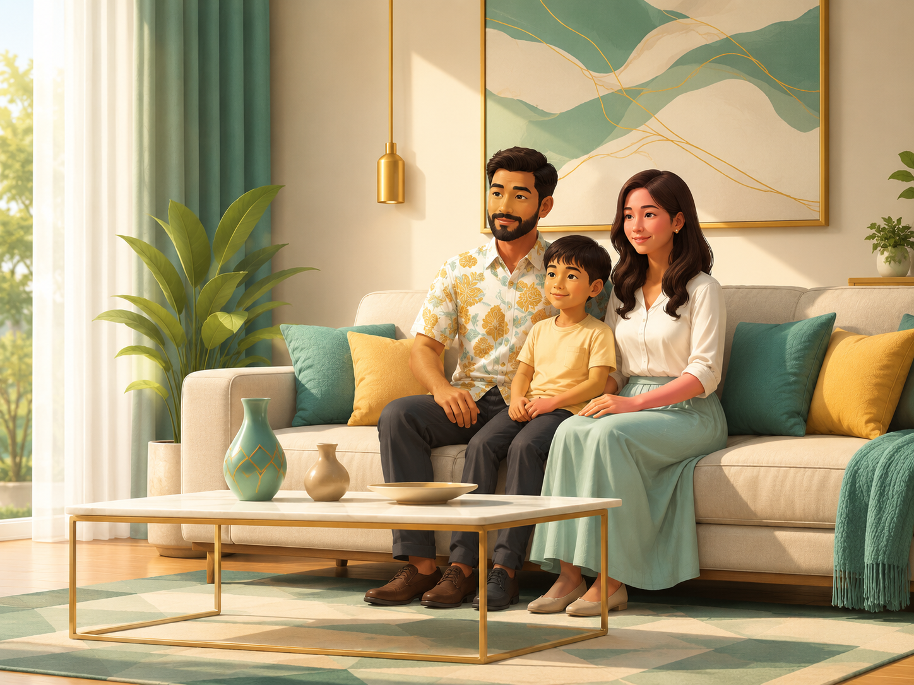
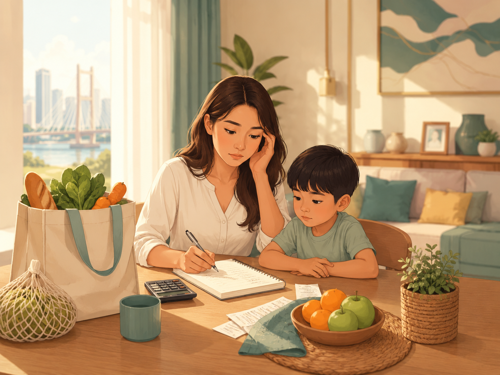

Data negara,
ketenangan keluarga.
TenangKita membantu rakyat memahami tekanan kos sara hidup melalui data rasmi negara, pilihan harga setempat dan tindakan mingguan yang mudah, selamat dan boleh disemak.
Bagaimana TenangKita menjaga amanah data?
Setiap insight dilabel supaya rakyat dan stakeholder tahu sama ada ia data langsung, data contoh, anggaran, atau memerlukan semakan rasmi.
Disambungkan kepada ekosistem data negara
TenangKita tidak menggantikan portal rasmi. Ia menterjemahkan isyarat makro daripada sumber rasmi kepada kefahaman isi rumah dan tindakan rakyat.

Stabil / Stable
Tekanan belanja meningkat sedikit, tetapi masih terkawal.
Adakah keluarga saya masih okay bulan ini?
Ya, keluarga masih stabil bulan ini. Namun, TenangKita mengesan tekanan kecil pada bakul dapur dan perjalanan minyak. Tindakan paling praktikal ialah semak pilihan harga berhampiran, rancang pembelian dapur dan semak manfaat rasmi yang mungkin berkaitan.
OpenDOSM · data langsung jika tersediaContoh PriceCatcherAnggaran TenangKitaTenangKita estimateKitaran demo: 26 Mei 2026- Profil isi rumah menggunakan persona demo Ismail, bukan PADU sebenar.
- Tekanan belanja dikira melalui anggaran bakul dapur dan penggunaan minyak.
- Data rasmi ekonomi diambil daripada OpenDOSM jika tersedia, dengan fallback demo data.
Bagaimana rakyat guna TenangKita?
Adakah keluarga masih okay?
Apa barang atau kos yang menekan?
Di mana pilihan harga dan sokongan?
Apa langkah kecil minggu ini?
Apa Yang Berubah / Harga Berhampiran
PriceCatcher membantu melihat pilihan harga berhampiran. Ia melengkapkan isyarat CPI rasmi, bukan menggantikannya.
Beras Putih Tempatan
10kg · stabil
Ayam Standard
+RM0.30 minggu ini
Minyak Masak
Sample pack
Nota amanah data
Untuk demo ini, harga setempat menggunakan data contoh terpilih. Sambungan penuh kepada dataset PriceCatcher perlu dinilai dari sudut kaedah akses data, kemaskini berkala dan tadbir urus.
Simulasi Kesan Minyak dan Belanja
Kiraan ini membantu isi rumah memahami kesan perubahan harga. Ia bukan nasihat kewangan rasmi, jumlah bantuan rasmi atau keputusan kelayakan.
Anggaran Impak
Tambahan bulanan
Skor dikemas kini
Stabil / Stable
Wawasan Komuniti Kita di Shah Alam
Maklumat ini membantu anda melihat peluang harga, sokongan komuniti dan tindakan mudah di kawasan Shah Alam. Sila semak sumber rasmi untuk pengesahan.
Status Ekonomi Setempat: Stabil
Anggaran TenangKitaTenangKita estimateData setempat contohLocal samplePaparan ini menunjukkan wawasan setempat secara skematik untuk Shah Alam. Ia membantu rakyat melihat peluang harga, sokongan komuniti dan tindakan berdekatan, namun lokasi dan nilai sebenar perlu disahkan melalui sumber rasmi.
- Lokasi persona ialah Shah Alam, Selangor.
- Harga dan sokongan setempat dipaparkan sebagai sample demo.
- TenangKita tidak mendakwa lokasi sebenar tanpa integrasi geospatial rasmi.
Manfaat Yang Mungkin Berkaitan
Cadangan ini membantu anda mengenal pasti manfaat yang mungkin berkaitan. Kelayakan sebenar perlu disemak melalui Portal Manfaat rasmi.
Sumbangan Tunai Rahmah
Bantuan kewangan untuk meringankan kos sara hidup bagi kumpulan tertentu.
Pas My50
Berpotensi relevan jika pengguna kerap menggunakan pengangkutan awam sekitar Lembah Klang.
SARA
Bantuan barangan asas melalui mekanisme rasmi. Tidak dianggap layak sehingga disahkan.
3 Tindakan Minggu Ini
Checklist Tindakan Minggu Ini
Checklist ini membantu rakyat menukar insight kepada tindakan kecil yang boleh dibuat minggu ini. Ia tidak menyimpan data, tidak menilai rakyat dan tidak menggantikan semakan rasmi.
Langkah praktikal untuk Ismail
Berdasarkan status Stabil, fokus minggu ini ialah kekalkan kawalan belanja, semak pilihan harga dan rancang perjalanan.
Kenapa checklist penting?
Dashboard hanya menunjukkan keadaan. Checklist membantu rakyat bergerak daripada “apa yang berlaku” kepada “apa yang boleh saya buat minggu ini”.
Amanah Data & Had Penggunaan
TenangKita mesti boleh dipercayai oleh rakyat Malaysia. Oleh itu, prototaip ini membezakan data rasmi, data contoh, anggaran dan semakan rasmi dengan jelas.
Status Sumber Data Dalam Prototaip
Kenapa cadangan muncul?
- Jika bakul dapur meningkat, TenangKita cadangkan semak pilihan harga berhampiran.
- Jika kesan minyak meningkat, TenangKita cadangkan rancang perjalanan mingguan.
- Jika manfaat mungkin berkaitan, TenangKita cadangkan semak kelayakan rasmi.
- Jika data live tidak tersedia, TenangKita tunjuk fallback demo data dengan label jelas.
Wording selamat untuk rakyat
- mungkin berkaitan
- semak kelayakan rasmi
- pilihan harga berhampiran
- anggaran isi rumah
- anda layak
- bantuan dijamin
- harga termurah dijamin
- data PADU disambungkan
Prinsip kepercayaan TenangKita
Untuk meyakinkan rakyat dan pengurusan tertinggi, TenangKita mesti menerangkan sumber, had penggunaan dan sebab sesuatu cadangan muncul. Rakyat tidak patut rasa dipantau, dinilai atau dihukum. Mereka harus rasa dibantu memahami keadaan dan diberi pilihan tindakan yang selamat.
Cara TenangKita Mengira
Skor ini ialah anggaran ringkas untuk membantu keluarga memahami tekanan belanja bulan ini. Ia bukan penilaian kewangan rasmi, bukan jumlah bantuan rasmi dan bukan keputusan kelayakan.
Model Skor Ketenangan Belanja
Ekosistem Data
Pantau Krisis DOSM
Rujukan pemantauan tekanan makro dan krisis bekalan negara.
DOSM / OpenDOSM
Isyarat ekonomi rasmi dan API terbuka jika tersedia.
PriceCatcher KPDN
Rujukan peluang harga setempat sebagai data contoh untuk demo.
Portal Manfaat MOF
Rujukan penemuan manfaat tanpa tuntutan kelayakan automatik.
TenangKita
Terjemahan kepada maksud isi rumah dan tindakan mudah.
Privasi & Ketelusan
TenangKita menggunakan maklumat asas seperti lokasi, jenis isi rumah dan anggaran belanja untuk menjana panduan. Data ini digunakan untuk membantu pemahaman, bukan untuk menilai atau menghukum rakyat.
Lapisan Amanah Digital
Setiap insight perlu menyatakan sama ada ia datang daripada data rasmi, data contoh, anggaran TenangKita atau pautan semakan rasmi. Ini mengelakkan overclaiming dan membantu stakeholder memahami had prototaip.
Data langsung jika tersediaLive where availableData contoh terpilihCurated sampleAnggaran isi rumahHousehold estimateSemakan rasmi diperlukanOfficial check requiredMaya · Single mother in Johor Bahru
Tekanan belanja meningkat bulan ini. Kita fokus kepada pilihan harga berhampiran, manfaat yang mungkin berkaitan dan tindakan kecil yang boleh membantu minggu ini.

Tekanan Meningkat